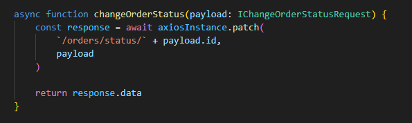
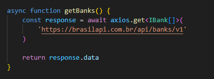
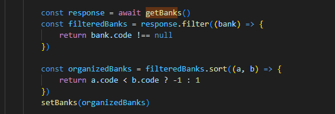
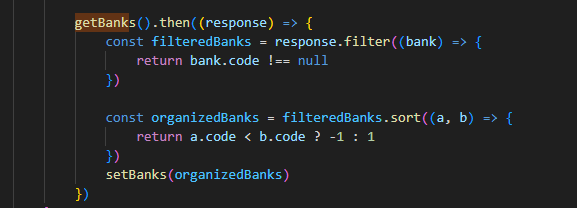

2.5- Processamento Assíncrono
Sempre que for necessário aguardar um processamento assíncrono, cujo tempo de execução não pode ser controlado pelo aplicativo, devem ser usadas as keywords async e await, de forma a garantir que o aplicativo não trave o loop de eventos do engine javascript (o que poderia produzir a experiência de travamento no navegador, para o usuário, no caso de frontend). A mesma regra deve ser seguida no backend, usando node.js ou em dispositivos mobile.
Exemplos deste tipo de situação, em um frontend, são: - Acesso ao backend - Acesso a uma API externa, por exemplo, Google ou AWS Storage. - Acesso direto a um Banco de Dados, via nbiblioteca SDK ou via uma API - Execução de qualquer função que retorne uma Promessa (Promise)
Vamos fornecer alguns exemplos de como fazer isso.
- Acesso ao backend:

Neste caso, a keyword await precisa ser usada antes da função axiosInstance.patch(...), para garantir que a função só retorna quando os dados em response.data estiverem prontos.
Enquanto isso não ocorre, o engine JavaScript passa o controle do fluxo para o loop de eventos que irá determinar que outras threads do aplicativo ou de outros sistemas, devem ser executados, impedindo assim, que o seu navegador trave.
- Acesso a uma API externa:

Similar ao exemplo anterior.
Um ponto importante, aqui, diz respeito à chamada deste tipo de função nas funções de nível mais elevado. É importante procurar usar sempre as keywords async e await, ao invés de callbacks ou de chaining com o método .then(...).
Neste caso, a opção abaixo

é a recomendada, em relação à versão chained, abaixo
